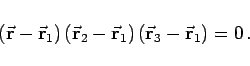

Inhalt Index DeskTop Bronstein

 Geometrie Vektoralgebra und analytische Geometrie Analytische Geometrie des Raumes Gerade und Ebene im Raum
Geometrie Vektoralgebra und analytische Geometrie Analytische Geometrie des Raumes Gerade und Ebene im Raum


Jede in den Koordinaten lineare Gleichung definiert eine Ebene, und umgekehrt ist die Gleichung jeder Ebene vom ersten Grade.
Die allgemeine Ebenengleichung lautet
| (3.397b) |
wobei der Vektor senkrecht auf der Ebene steht. (In der Abbildung sind die Achsenabschnitte der Ebene a,b,c eingezeichnet.)
(Zum Skalarprodukt zweier Vektoren s. Skalarprodukt und Skalarprodukt in affinen Koordinaten, zur Ebenengleichung in Vektorschreibweise s. Vektorielle Gleichungen)
Man spricht vom Normalenvektor der Ebene. Seine Richtungskosinusse sind
| (3.397c) |
Wenn D = 0, dann geht die Ebene durch den Koordinatenursprung, für A = 0 bzw. B = 0 oder C = 0 ist die Ebene parallel zur x-Achse, bzw. zur y- oder z-Achse. Wenn bzw. A = C = 0 oder dann liegt die Ebene parallel zur x,y-Ebene, bzw. zur x,z- oder y,z-Ebene.
Die HESSEsche Normalform der Ebenengleichung lautet
| (3.398b) |
wobei der Normaleneinheitsvektor der Ebene ist und p der Abstand der Ebene vom Koordinatenursprung. Die HESSEsche Normalform geht aus der allgemeinen Gleichung (3.397a) durch Multiplikation mit dem Normierungsfaktor
| (3.398c) |
hervor. Dabei muß das Vorzeichen von  entgegengesetzt zu dem von D gewählt werden.
entgegengesetzt zu dem von D gewählt werden.
(Zum Skalarprodukt zweier Vektoren s. Skalarprodukt und Skalarprodukt in affinen Koordinaten, zur Ebenengleichung in Vektorschreibweise s. Vektorielle Gleichungen.)
Mit den Strecken die unter Berücksichtigung des Vorzeichens von der Ebene auf den Koordiantenachsen abgeschnitten werden, gilt:
| (3.399) |
Die Gleichung einer Ebene, die durch drei Punkte geht, lautet
| (3.400a) |
|  | (3.400b) |
(s. Spatprodukt dreier Vektoren).
Die Gleichung einer Ebene, die durch zwei Punkte geht und parallel zu einer Geraden mit dem Richtungsvektor liegt, lautet
| (3.401a) |
 |
(3.401b) |
(S. auch Spatprodukt dreier Vektoren.)
Die Gleichung einer Ebene, die durch einen Punkt geht und parallel zu zwei Geraden mit den Richtungsvektoren und verläuft, lautet
| (3.402a) |
 |
(3.402b) |
(S. auch gemischtes Produkt oder Spatprodukt dreier Vektoren.)
Die Gleichung einer Ebene, die durch einen Punkt geht und senkrecht zu einer Geraden mit dem Richtungsvektor  verläuft, lautet
verläuft, lautet
| (3.403a) |
| (3.403b) |
(Zum Skalarprodukt zweier Vektoren s. Skalarprodukt und Skalarprodukt in affinen Koordinaten.)
Einsetzen der Koordinaten des Punktes P(a,b,c) in die HESSEsche Normalform der Ebenengleichung (3.398a)
| (3.404a) |
liefert
| (3.404b) |
Wenn P und der Koordinatenursprung auf verschiedenen Seiten der Ebene liegen, ist im entgegengesetzten Falle ist
Die Gleichung einer Ebene, die durch die Schnittlinie zweier Ebenen mit den Gleichungen
A1x + B1y + C1z + D1 = 0 und A2x + B2y + C2z + D2 = 0 verläuft, lautet
Dabei ist  ein reeller Parameter, so daß durch die Gleichungen (3.405a) und (3.405b) ein ganzes Ebenenbüschel beschrieben wird. Die folgende Abbildung zeigt den Fall eines Ebenenbüschels mit drei Ebenen.
ein reeller Parameter, so daß durch die Gleichungen (3.405a) und (3.405b) ein ganzes Ebenenbüschel beschrieben wird. Die folgende Abbildung zeigt den Fall eines Ebenenbüschels mit drei Ebenen.
Wenn  in den Gleichungen (3.405a) oder (3.405b) die Werte zwischen
in den Gleichungen (3.405a) oder (3.405b) die Werte zwischen  und
und  durchläuft, erhält man alle Ebenen des Büschels. Für erhält man die Gleichungen der Ebenen, die die Winkel zwischen den beiden gegebenen Ebenen halbieren, wenn deren Gleichungen in der Normalform gegeben sind.
durchläuft, erhält man alle Ebenen des Büschels. Für erhält man die Gleichungen der Ebenen, die die Winkel zwischen den beiden gegebenen Ebenen halbieren, wenn deren Gleichungen in der Normalform gegeben sind.
(Zum Skalarprodukt zweier Vektoren s. Skalarprodukt und Skalarprodukt in affinen Koordinaten, zur Ebenengleichung in Vektorschreibweise (s. Vektorielle Gleichungen.)